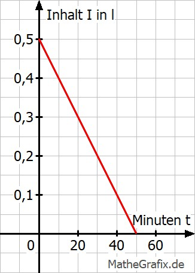

Lineare Funktionen Aufgabe 90 Eine Krankenschwester legt einem Patienten um 9.10 eine 0,5 l Infusionsflasche an. Um 9.25 sind noch 0,35 l in der Flasche. a) Wie viel Liter sind nach 30 Minuten ins Blut gelangt? b) Nach wie vielen Minuten ist die Flasche leer? c) Nach wie vielen Minuten sind noch 75% in der Flasche? a) Von 9.10 Uhr - 9.25 Uhr sind es 15 Minuten. In dieser Zeit sind 0,5 l - 0,35 l = 0,15 l durchgeflossen. In 30 Minuten sind 2 * 0,15 l = 0,3 l ins Blut gelangt. b) Die Funktionsgleichung lautet: Inhalt I Zeit t 0,3 l m = -------- = 0,01 l/min 30 min I = 0,5 - 0,01 * t  Flasche leer bedeutet Inhalt I = 0 0 = 0,5 - 0,01 * t | -0,5 -0,5 = - 0,01 * t |: 0,01 t = 50 Minuten c) 75% von 0,5 l = 0,75 * 0,5 l = 0,375 l 0,375 = 0,5 - 0,01 * t | -0 -0,125 = - 0,01 * t |:0,01 t = 12,5 Minuten